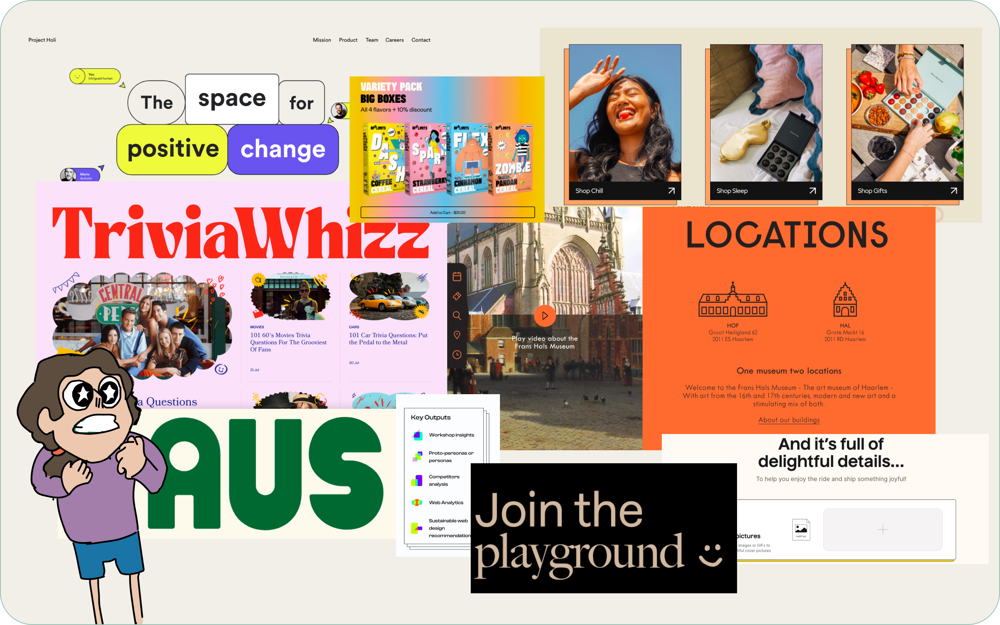
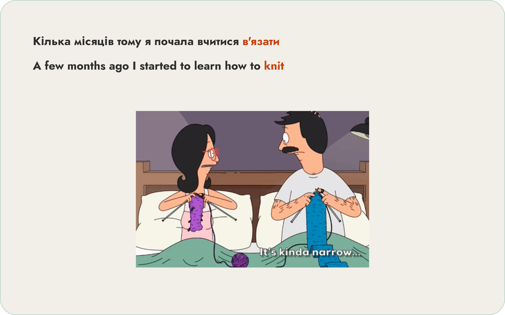
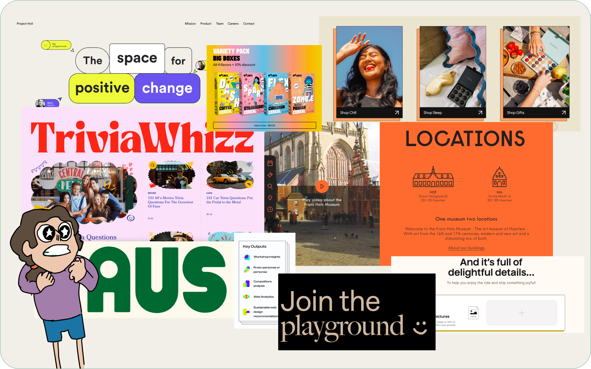
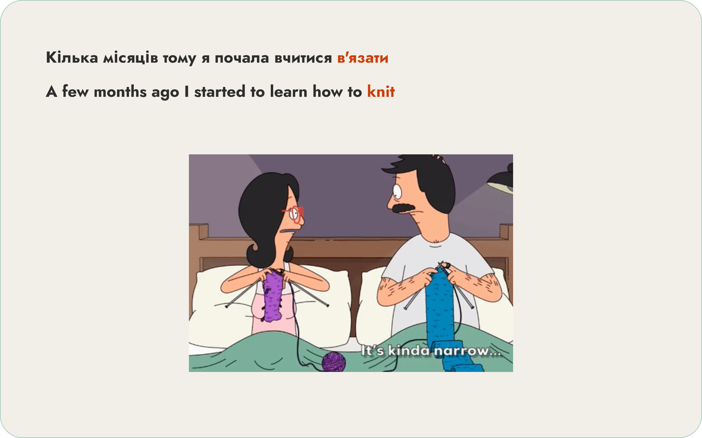

The Not So Secret Case of the Personal Website
Mission brief: As part of my Web Design Junior course, we were given a fun, unofficial assignment: create a personal website to introduce ourselves to our mentors and fellow aspiring designers.
Objective: Intrigue my peers and mentors while avoiding the dreaded "boring self-introduction" syndrome.
 


